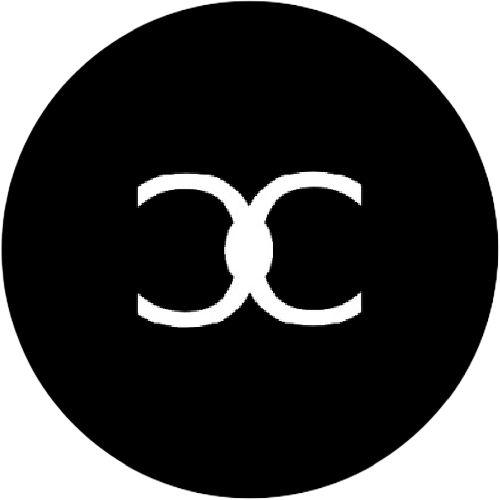

Equipe
A Hert na atualidade apenas possui um integrante, sendo ele o próprio fundador (jp222343)
Integrantes:
- jp222343
Fundador da Hert
Biografia de jp222343

jp222343 é um desenvolvedor amador que gosta de recriar sistemas já existentes. Os seus projetos consistem em extrair APIs externas e entregá-la um front-end amigável, e adicionando funcionalidades bônus.
Ele é o atual fundador e único integrande da Hert, que ainda está em fase de desenvolvimento, e muitos projetos serão descontinuados enquanto outros serão aprimorados.